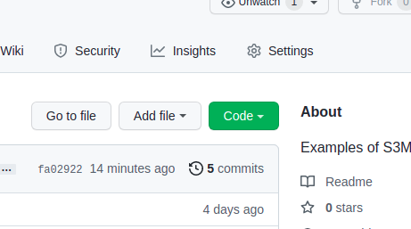
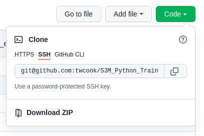
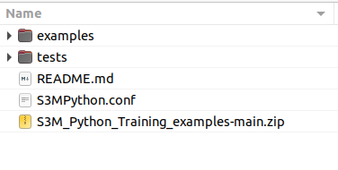
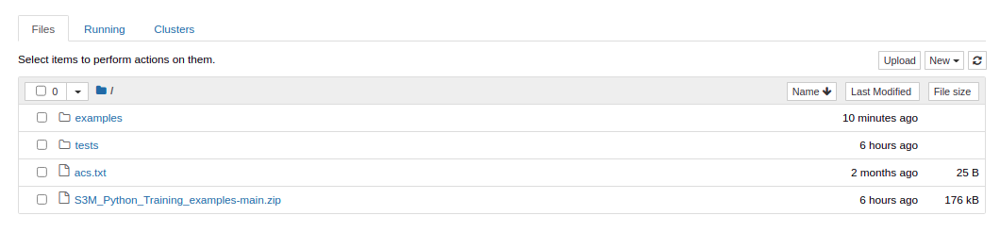
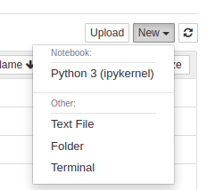
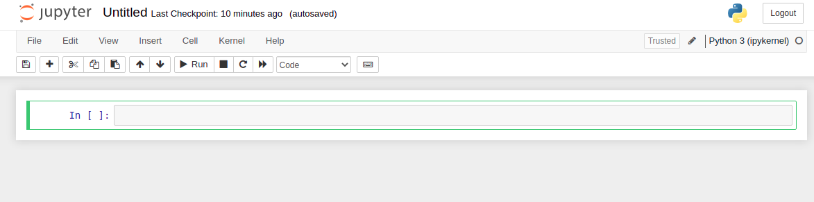
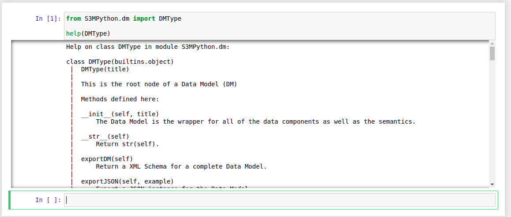

Tutorial Setup¶
You MUST know how to find a terminal window on your computer.
You MUST understand how to use a ZIP file extractor.
You MUST know how to navigate directories/folders in your terminal.
If you do not know how to do these things there are tutorials available for all operating systems on the Internet.
Note
We RECOMMEND opening external links from this page in a new tab on your browser. That way you can look for the S3M logo and return here to continue the tutorial steps.
Prerequisites¶
To learn about the S3Model Reference Model using the Jupyter notebook exercises, the user will first need to install Anaconda for their operating system. Be sure to use the version for Python 3.7 or later. Unless the user is an expert Python developer and can install the prerequisites manually, Anaconda is by far the best way to install the basic prerequisites for this tutorial. When installing Anaconda, the non-expert user should allow Anaconda to set the system Python interpreter during installation.
Open a terminal window:
On Windows, use an Anaconda Prompt terminal from the Anaconda menu.
On Mac or Linux, use a terminal window. Detailed instructions.
In the terminal window the prompt should start with (base). Indicating that Anaconda has set the Python environment.
Install Jupyterlab interface:
conda install -c conda-forge jupyterlab
Navigate to a convienent directory in the terminal, for installing the tutorial.
Warning
REMEMBER this directory/folder. We certainly don’t recommend putting these files in the root directory. If you can’t think of a better place then do this in the Documents folder.
Using the terminal window create a new subdirectory named, “S3MTraining”:
mkdir S3MTraining
Change to the new directory:
cd S3MTraining
Issue this command in the terminal window:
conda create -n S3MTraining jupyterlab
You will see a long list of packages to be installed. A prompt will ask you to confirm installation. Respond with a y and then the Enter key.
The above command creates a conda environment named S3MTraining.
Activate the environment:
conda activate S3MTraining
Install the S3Model Python implementation with this command:
pip install S3MPython
When the installation is complete, the last line in the terminal should be:
Successfully installed S3MPython-(version number) and a list of the other packages installed.
S3MPython needs to be configured for any project. This includes using it with theese examples. In the terminal window, type:
python
>>>from S3MPython import project
>>>project.init()
Test the installation by starting the Jupyter Lab server:
jupyter-lab
This command should open a new tab in your default web browser (Firefox, Chrome, Edge, etc.)
Get the examples¶
In a new browser tab, go to the Github repository to download the examples.
Click on the green Code button on the right side of the page.
A dropdown menu will appear.
Select the Download Zip link. Download this file to the S3MTraining directory.
Using your ZIP file extractor of choice:
Open the S3M_Python_Training_examples folder in the ZIP extractor.
Extract the files and folders into the S3MTraining folder created earlier.
The S3MTraining folder should look similar to:
Testing the installation¶
In the original Jupyter Notebook browser tab:
Create a new notebook by clicking on the New button on the right side of the window.
A menu will dropdown as shown here:
From the menu select the Python 3 option. This should open a new tab in your browser and the page should look like this:
and enter the following code into the first cell:
from S3MPython.dm import DMType
help(DMType)
It should look like this:

Now click on the Run button in the menu.
If all went well your window should have this display:
The elements and descriptions for the Data Model (DM) wrapper will be displayed as shown above. Each model component has a help file that you can display in the same way.
Close this browser tab. If you get a Warning that your changes won’t be saved. Just click the Leave button.
Jupyter notebook examples¶
select the examples folder. If you do not see the folder. There is a Refresh button next to the New button that you used earlier.
in the examples folder, select the 00. Getting Started.ipynb file.
Follow all instructions.
Congratulations!
The user is now ready to explore the lessons using Jupyter notebooks, where the user will interactively learn how to build data models using the S3Model approach.
Note
In case you accidentally close the terminal where you started the Jupyter server. You can resart it by:
Open a new terminal.
Navigate to the S3MTraining directory.
Activate the environment with the command: conda activate S3MTraining
Start Jupyter with the command: jupyter notebook.
If you want to remove the S3MTraining environment use these commands:
conda deactivate
conda remove --name S3MTraining --all